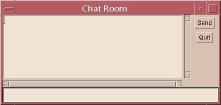

SL275: Module10: Building Java GUIs
Exercise #1: Create the ChatClient GUI
(Level 1)
Objective
In this exercise you will create a GUI for a "chat room" application.
You will use a complex layout two properly position several GUI components
in a frame.
Directions
You will create a class called ChatClient that implements the following
GUI design:

As you can see, there are four components in this GUI. The main component is
a TextArea. The bottom component is a TextField. There are
two Button components on the right. You will need to refer to
Appendix C in the textbook for instructions on how to use the text components.
- Create the ChatClient class with four private attributes;
one for each component. In the constructor, initialize each of these
component attributes: the text area should be 10 rows tall and 50 columns
wide, the text field should be 50 columns wide, the send button should
have the word "send" in the display, and likewise for the quit button.
- Create a launchFrame method which constructs the layout of
the components. Feel free to use nested panels and any layout managers
that will help you construct the layout in the GUI design shown above.
- Create the main method. This method will instantiate a new
ChatClient object and then call the launchFrame method.